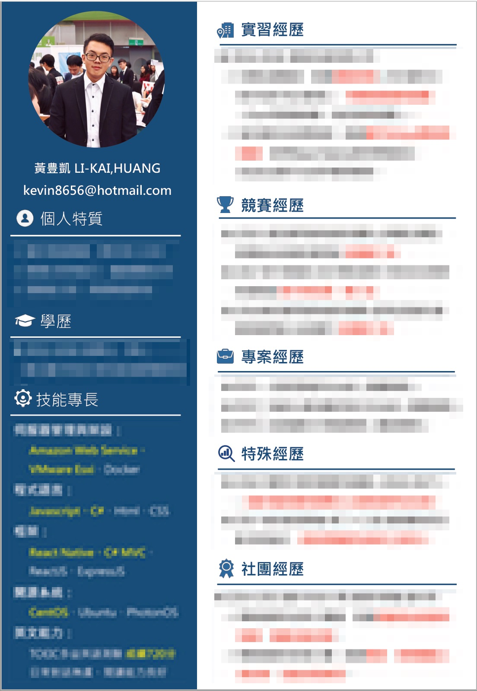

前言
2018年的年底，在碩士甄試告一段落後，因為大四下學期學校沒有必修課，所以我就開始找各種實習工作，希望能找到與我之前實習的公司不同風格的公司，希望是一間比較活潑、公司員工之間比較多互動的公司，看能否學一些不一樣的東西。後來我面試了兩間公司，第一間是位於台中中港五權路交接口，面試風格十分隨性，老闆帶我去頂樓喝咖啡聊是非（聊面試啦xD） ，且公司對面還有超棒的共同工作空間monospace的創科資訊。另一間就是今天要分享的新加坡商-鈦坦科技，主要是因為這次面試經驗實在是太好玩太棒，也覺得他們的團體面試十分有創意，因此很想要分享給大家！
關卡簡介
第一階段-書面審查
第二階段-現場面試
筆試（DISC人格測驗、邏輯測驗、城市測驗）
團體面試（團隊桌遊）
第一階段-書面審查
在準備書面審查資料的過程我其實超級緊張，因為之前就聽說過鈦坦都超多人報，而這次最後知道有110個報名，取40位進入第二階段，而最終只會錄取4-6位左右的學期實習生，實在是場硬仗呀！
而書面審查資料主要分為以下部分：
「實習報名表」
實習報名表是使用鈦坦給的公版簡歷格式，裡面的欄位有個人基本資料、與專長有關之經歷、程式專長、學科專長以及社團經歷等欄位給我們填寫，主要我是如以下這樣填寫這整份簡歷的：
- 與專長有關之經歷-過去實習的經驗、實習做過的專案及心得與收穫。
- 程式專長-以語言做區分，我寫了三個語言分別是React Native、ASP.net C#及Express（node.js的框架），並且每個語言又用實習、競賽或者專題的專案經歷，去說明這個語言裡面我會什麼、我做過什麼。
- 學科專長-這個主要好像是要問在學期間你比較擅長的學科，我寫了幾個我比較高分且有心得的課程，例如跨平台程式設計、雲端與虛擬化等，大多分數都是95-100之間
- 社團經歷-這邊我寫了五專期間擔任資管科學會、中科大某一年的程式設計助教經驗還有在上一間實習公司曾經代表公司網路組去參加AWS的研習活動（主要是因為這些經歷不知道可以放在哪裡，就把他們都當作課外經歷，一起放在社團經歷的部分）
「額外的個人簡歷」
額外的個人簡歷我請已經在公司實習的朋友，幫我問了鈦坦的HR需不需要交，因為總覺得我的簡歷都在實習報名表寫很請楚了，感覺有點重複講的感覺。最後得到的回覆是「希望收到一份具有應徵者個人特色的額外簡歷」。
心裡OS：具有應徵者個人特色……啊啊啊啊看來是要考個簡歷版面設計啊xDDD慘囉！
因為我對於版面設計實在不是很拿手，不過人家HR都說要具有「個人特色」了，只好上網狂找模板參考，並且加上自己的一些排版想法硬上了。但，做完之後我發現
啊我做這樣不就很一般常見的簡歷樣式嗎T^T
最後做出來的簡歷長相大概是這樣（內容害羞不給你看）

還好最後有進入複試階段，因為聽說鈦坦科技的現場面試非常豐富有趣，所以我是真的很想去面試看看！
第二階段-現場面試
第二階段的現場面試主要分為兩個階段，分別是筆試與團體面試。
在面試當日我來到位於台中市政府內的大樓準備去鈦坦科技面試，突然發覺 這地方我之前來過呀！ 原來鈦坦科技與我曾經去領過獎學金的中國上優公司是在同一間大樓的不同樓層，這邊的環境跟地理位置我都非常喜歡呀！不過在我原本的想像中，還以為鈦坦科技是獨立的一棟建築物然後裡面非常豪華之類的（因為是外商 我想像得超大超豪華xD）
這次的第二階段-現場面試好像總共分為三天，每天又分為上午跟下午兩場，第三天只有早上，總共五場的樣子。就最後人數上來看應該是每場8人，總共40人。
當天進到鈦坦的公司，是HR姊姊親自親切的迎接我們，跟我同場的應徵者有三個女生（一個缺席），以及包括我在內的四個男生。進到公司後HR姊姊要我們將鞋子換成拖鞋，並且帶著我們進到了一間看起來像會議室，四面都是玻璃或者白板牆（可以隨意地在牆壁或玻璃上寫重點、畫圖之類的 很棒！）
會議室中每個座位上已經放好了筆試考卷、筆還有水跟贈送的紀念品-鈦坦鯨魚便條紙，筆試主要有分為三個部分分別是DISC人格測驗、邏輯測驗以及程式測驗，這邊就直接列出來並且附上我的心得：
「筆試」
- DISC人格測驗
我在到鈦坦複試之前我有先上網看別人的心得，大概知道這個人格測驗是為了幫我們在之後的團體面試分組，每一組別內他們希望有不同人格特質的人，並且讓大家互相合作進行團體面試，切磋出不同的火花。
這邊我非常誠實的填寫，寫之前還以為我會是D型人格特質（掌控型）比較強的人，後來沒寫道寫完計算的結果，我的I型人格特質（影響型）是最高的。而在分數結果裡面，我的S型人格（穩定型）是最低的，摁…….這是在我預料之中啦，我的穩定性真的 有點差啊xD
- 邏輯測驗
邏輯測驗這一次是透過Windows的服務的啟動狀態來考大家，題目的說明是：
1 | 「服務總共分為A、B、C三個，並且有啟動、停用的兩種狀態。每一個服務都可以設定為自動啟動、手動啟動以及停用三種啟用設定，而服務之間有相依性，這邊相依性為A依賴於B、 B又依賴於C服務。手動啟動可以是讓使用者自己啟動，或者因為相依服務的需求而啟動。」 |
因為我自己對服務的啟動有點經驗，我知道這題考的重點就在於最後一句話「因為相依服務的需求而啟動」，意思就是 假設B依賴於C，而C是手動啟動，B是自動啟動的話，代表開機後B會自己啟動，而因為B依賴於C，因此B需要C也啟動，所以C的最終結果也會是啟動狀態。
理解完題目之後，下面有十五種不同的啟動設定，例如：
1 | A服務 自動啟動 |
然後要我們依照題目給的條件，判斷最後這三個服務會是啟用還是停用
像上面這個題目，A依賴於B，所以照理來說A自動啟動後，B也會跟著啟動，但後面我們發現C服務是設定停用狀態，B依賴於C，因此C不啟動B也不能啟動，也造成A服務跟著不能啟動，所以最終結果就是：
1 | A服務 停用 |
而剩下的十四題題目確切是什麼我也不記得了，不過這個邏輯測驗理解他的難點之後就蠻好作答的，這邊的分數我應該是有全部拿到。
- 程式測驗
而在程式測驗的部分沒有考得很難，我被考到的題目類型大概是下面幾種：
1 | 1.給予邊長，用*號印出直角三角形 |
程式提其實都是考一些基礎程式習題，有複習過的話應該很好拿分，不過聽最後結果我好像是少數程式分數蠻高的應徵者，我在寫的途中用的都是匿名委派，所以也不太容易被挑naming的錯誤。
「團體面試」
接下來就要講最精彩的團體面試了，在團體面試也分為幾個部分，分別是暖場活動、橄欖球自我介紹問答以及團體桌遊-體驗敏捷開發的賺錢遊戲
- 暖場活動
在寫完筆試試卷並且休息了一下後，工作人員們先帶我們到會議室外的大桌子上圍一圈坐著，跟我們說明因為大家感覺很緊張，所以現在要先進行暖場活動，活動內容是要我們每個人抽一張桌遊牌，牌子上會寫著某樣東西，然後給我們一張白紙去用畫圖形容那個東西，最後也讓我們有口頭形容的機會，要想辦法讓其他人猜出你的東西是什麼。
在這個關卡我抽到聖誕老人，我就畫一張臉+聖誕帽+鬍子，然後被一個從頭到尾都超會猜的女生直接猜中（我一句話都還沒講，她就直接：「我知道！聖誕老人！」了xD）
- 橄欖球自我介紹問答
而接下來就是大家知道一定會有的自我介紹與問答時間，我們被帶到公司的一個坐著的區域，地板上擺著很多懶人椅跟坐墊，而這次自我介紹的方式是「介紹自己人生中最想和大家分享的三件事」，並且在講之前要跟主持人拿一顆橄欖球抱著，有種拿到話語權力的感覺，這個部分我後來查了一下，這個環節應該就是指敏捷開發中的Scrum吧，Scrum在英語是橄欖球運動中列陣爭球的意思，所以才讓大家拿橄欖球進行自我介紹。
在這個環節每個人限定兩分鐘，不過其實根本就沒有限定時間，所以不要太客氣要盡可能地講好講滿呀！我這一梯次的應徵者很多樣化，有超級開朗健談的女生、文靜內向的男生、感覺善解人意的女生、還有感覺有點強勢的另一個女生。
在大家的自我介紹過程中，其實我一直在觀察每個人、分析每個人的個性，並且先為了下一個階段的團體合作桌遊做準備，不管是哪個人都有可能變成我的隊友，我都得想出跟他/她相處討論的方式，因為我知道鈦坦很重視在團體合作中，是否每個隊員都可以發表意見、互相討論並且得出最終答案。如果只有少數幾個人獨攬大局，最後很可能會全軍覆沒大家分數都很低。
我主要分析的是每個人的個性、喜好、還有他們的雷點。開朗健談的女生我推測可能有時候會有點傻大姐，然後無法顧到其他比較內向的人，可以讓她引導整個環節的氣氛，並且適時的幫她篩選她的意見。文靜內向的男生則讓我感覺他實力非常強，他講出來的方法或結論值得信任，但要想辦法引導他發表意見。善解人意的女生則很適合讓她進行統整規劃，並且作整個遊戲的流程掌控。而強勢的女生則是要讓她有表現的機會，並且適時的讚美她，才能不起爭執。
我本身平常就蠻擅長也蠻喜歡分析周遭不同個性的人，給予不同的相處方式，讓雙方都感覺舒服自在，這個我在我的自我介紹中也有提到，是我擅長的優點。
而我自己的自我介紹流程蠻順暢的，主要我講了三件我想分享的事情，分別是我過去的音樂經歷（吉他老師、駐唱歌手、街頭藝人）、帶學弟妹參與活動（與學弟妹打成一片的心情）、還有因為面對現實而拋下我的音樂興趣，轉而認真鑽研資訊的這個心路歷程。
而評審們對我提問如下：
1 | 1.我提到過我用腦波耳機來量化心動指數，應用在交友系統，實際上這個APP是怎麼用？ |
問完這兩個問題並且在我回答完之後，就結束了我的自我介紹跟問答。
- 團體桌遊-體驗敏捷開發的賺錢遊戲
接下來就是最精彩的部分-賺錢遊戲。主要這個遊戲是一個目標為賺大錢的遊戲，現場工作人員利用簡報的方式跟我們說明遊戲規則。
1 | 首先參與遊戲的人員分為客戶、開發人員、財務三種人，客戶及財務由現場工作人員擔任，我們擔任開發人員，規則大概如下幾點： |
在整個遊戲過程中，發下來的任務卡片裡面還會穿插著「你如果在本回合花費3人力做教育訓練，從下回合開始總人力數量就會+1」之類的卡片，並且每個回合在我們決定好任務的人力分配之後，還要骰骰子，骰到1&2總人力-1，骰到3&4總人力不變，5&6則是總人力+1（聽他們說這是用來比喻真正職場上人力的不穩定性，看我們怎麼面對與處理）
整個遊戲過程我跟另一個女生組員是主要發表意見跟討論的人，而另一個男生太內向，雖然我覺得他很聰明，但是他總是無法加入我跟女生的激烈討論中，我試著引導他講話也沒辦法，後來只好在我們下每一個決定時都詢問他的意見，並且一定要經過他的同意我才定案，至少這樣不會被扣太多合作分數吧（我是這樣思考的）。
而整個遊戲過程其實進行得很順利，不過我們也發生了很多意外事故，比如沒有看好驗收條件還把任務做完（就是上面說到的客戶滿意度 > 4時完成此任務才拿得到報酬），造成其中一個客戶好感度降到0然後就掰掰了。但我覺得在過程中發生失誤是正常，而我們幾個隊員之間如何討論處理問題才是工作人員要評審的重點。在整個遊戲流程結束後，工作人員幫我們算每回合賺多少以及最終賺多少錢，並且寫在牆上的表格中。
遊戲結束後，工作人員並沒有將重點放在兩組人馬中哪一組賺的錢最多，而是讓我們大家各拿便條紙寫下我們在遊戲過程中的心得跟感想，然後一個一個把感想貼到牆上，一個一個出來分享，並且如果有重疊想法的人也可以把自己的便條貼在下面表示認同，而等大家都分享完工作人員則會出來說明，我們這些感想或心得其實在真正的開發流程中是怎麼樣的，讓我們真的去了解實際上這些感想怎麼應用在日後使用敏捷開發的過程，我覺得這樣的活動結尾真的是非常棒！也讓我學到很多！
面試結尾
在整個第二階段複試結束後，我們又回到一開始的會議室，並且HR姊姊給我們寫意見回饋表，並且還給我們一疊便條紙，寫下整個活動中很棒或者覺得可以改善的地方（感覺在鈦坦的日常工作生活中，會很常用到便條紙來協助意見的發表，記下關鍵字之類的，所以才會在問卷以外再給我們便條紙去寫）。
在寫問卷的過程中工作人員也去他們冰箱拿飲料給我們喝，一開始拿麥茶跟什麼紅茶的給我們，其他工作人員就說：「你拿這些他們不喜歡怎麼辦！給他們自己去冰箱任選啊！」，之後我們全部的應徵者就一起走出去他們食物區，開冰箱挑飲料了（氣氛超歡樂輕鬆）。
結論
這真的是我第一次參加這樣子的工作面試，非常的有趣好玩，並且也會很享受整個過程（跟那種死板的問答面試差非常多），讓我真的在有資格進到鈦坦實習以前就愛上了這家公司的風氣，真的很棒！
而大概在面試一週後公布了成果，學期實習生取六位，學年則取了一位，然後各自都有備取，並且有標示備取不是按照順序，而是按照個人特質（應該是指正取的團隊裡面有不同特質的人，而如果像是領導能力強的人不去了，會找備取中領導特質的人補上）。
最終結果
最終結果聽我在鈦坦工作的朋友說，我居然是正取一！！！！！他說他們對我印象很深刻，而且我程式測驗也是少數分數很高的人。110位應徵者裡面的1/110，我真的是受寵若驚，不過也許是因為鈦坦不是只看重技術能力的公司，剛好符合我這種整體能力都很均衡發展（但是都沒有特別突出）的人吧！
我覺得最重要的是要抱持著輕鬆、享受、投入的心態去參與整個複試流程，如果你的風格適合鈦坦的話，就會上的那種心情。
我在準備過程也真的沒想過我會錄取（被碩士甄試打擊信心後，看到110個人應徵我就覺得我GG了哈哈），所以我在活動過程中特別的不緊張，而且非常投入跟享受，我想也是這樣我才能表現得很真誠、很有自信、很讓人記憶深刻吧xDD（大家面試都在為自己緊張，都在抖，只有我自我介紹即興演出，還花時間分析別人哈哈）
大概是這樣吧，而實習是下學期才開始，工作上如果有什麼心得我再發文分享吧！（好期待零食櫃！！！>o<）